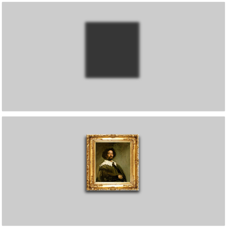
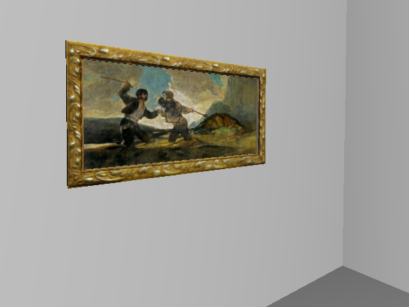
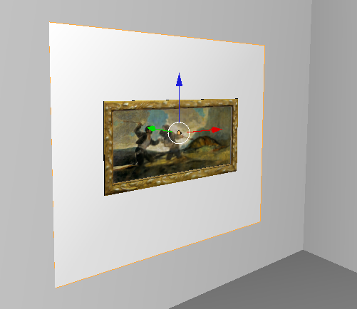
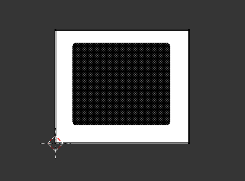
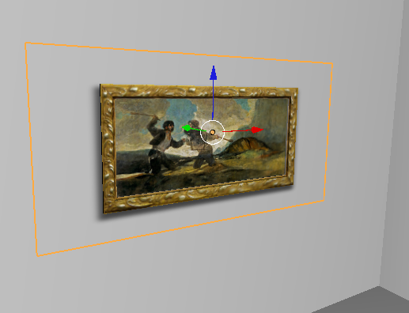
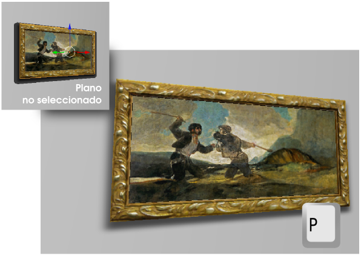

Prediseñadas
Está claro que si se mapea una textura de una pared, es posible que lleve incorporada alguna sombra y prediseñar esa pared con el efecto incluido. Un ejemplo es la siguiente imagen: si mapeamos la textura de arriba, después el cuadro da la sensación de proyectar una sombra.
Este es el método más elemental y se fundamenta en el tipo de mapeado UV que ya sabemos hacer. Tiene el inconveniente de que no es fácil alterar la localización de la sombra aunque con una buena planificación se consiguen bonitos resultados.
Para este tipo de efecto es mucho mejor hacer el mapeado de la sombra en un plano independiente situado entre el cuadro y la pared. Vamos a partir de una escena con una pared y un cuadro que tiene ya mapeada la pintura y el marco.
Añadimos un plano (Añadir/Malla/Plano) a la escena. Lo escalamos, rotamos y colocamos tal y como indica la imagen siguiente (lo mejor es usar el modo de sombreado Alambre y estar en un punto de vista ortográfico lateral para que el plano se coloque lo más cerca posible de la pared pero sin llegar a tocarla.
Dos asuntos importantes
- No aplicamos material alguno a ese plano. De lo contrario ya sabemos que correrá de nuestra cuenta seleccionar Mezcla alfa: Ordenar alfa en Opciones de juego, además de activar Textura en caras en la botonera Opciones.
- Comprobamos que la Normal del plano apunte hacia el lado correcto para el mapeado. Activamos la visibilidad de las Normales en el cuadro Propiedades ("N") en la botonera Visualización de malla mientras estamos en Modo Edición
 .
.
En ese plano vamos a mapear una imagen con la sombra. Su principal característica es que se trata de un PNG con transparencia pensado precisamente para que en los lugares adecuados deje ver la pared de atrás.
Hacemos el mapeado según lo aprendido hasta ahora. Mostramos un esquema del proceso:
- Pasamos al entorno de trabajo UV Editing.
- En el Editor UV
 cargamos la imagen de la sombra que hemos guardado en nuestro disco duro. El contorno difuminado de la sombra no es interpretado de ese modo por el Editor UV , pero eso no es un problema para trabajar.
cargamos la imagen de la sombra que hemos guardado en nuestro disco duro. El contorno difuminado de la sombra no es interpretado de ese modo por el Editor UV , pero eso no es un problema para trabajar.

- En el editor Vista 3D,en Modo Edición , seleccionamos la cara
 del plano y hacemos Malla/Desplegar UV/Desenvolver.
del plano y hacemos Malla/Desplegar UV/Desenvolver.
- Ajustamos, aprovechando el sombreado Textura, para adaptar la sombra. Estos ajustes los hacemos tanto editando el mapeado UV como escalando el propio plano.

La ventaja de este método es que ahora es posible seleccionar el cuadro con la sombra y desplazarlos sin preocuparnos de nada más.
Cuando no tengamos seleccionado el plano para editarlo, la sombra se mostrará sin grados de transparencia, pero eso no significa nada porque al ejecutar la simulación ("P") no hay ningún problema.
